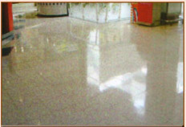

Ao longo dos anos tem-se usado pedra na construção pelas suas características específicas, mas também para causar impacto denotando prestígio e influência. Todavia, o tempo, juntamente com os efeitos do tráfego, poluição e uso diário dão à pedra uma aparência velha que se torna esteticamente desagradável.
Na Metalstone somos especialistas de restauro e manutenção cuidada destas valiosas superfícies de pedra, devolvendo-lhe e mantendo o aspecto original a longo prazo, através de uma manutenção adequada. Trabalhamos todo tipo de pedra, tal como mármore e granito, assim como todos os seus subtipos e derivados, nos mais diversos acabamentos.
Trabalhamos igualmente pavimentos artifíciais, tais como aglomerados, terrazzo, porcelanato e outros tipos cerâmicos. O processo de restauro de pavimentos de tipo cerâmico é exclusivo da nossa
empresa.

Mármore |

Porcelanato |
|
|

Terrazzo |

Granito e Mármore |
|